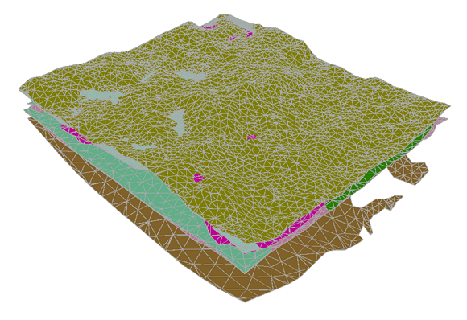

The ArcPy script "Import GOCAD" allows to import triangle meshes encoded in GOCAD TSurf ASCII file format into ArcGIS Pro. The import tool generates Polygon or Multipatch Feature-classes in ArcGIS Pro.
Note: The current script might not process GOCAD TSurf files which consist of more than one triangle mesh.